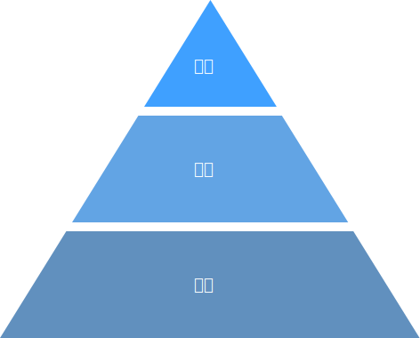

目前公链项目的社群，多以开发者为核心，社群参与者们在论坛中以去中心化的方式管理和交流。这种形式多是扁平化的，成员之间缺乏连接关系，难以形成凝聚力。另外也缺乏激励机制，社群的推广完全靠口碑彼此相传，当成员达到一定人数后，就很难再继续发展壮大，而且成员流失也很严重。
其实公链的发展虽然是以技术为主导，但是一条公链的支持者们除了开发者外，更有公链的用户和投资人。他们的数量往往远大于开发者社群，还可以给公链的发展提供额外角度的意见，更加可以帮助公链推广，产更大的影响力。
但是目前区块链的社群治理功能都非常简单，缺乏有效的层级管理关系和推广奖励制度，这一定程度上限制了社群的发展，如果有一套更加完善的社区治理和推广制度，相信可以帮助公链项目发展的更好。
因此我们将公链的社群分为了技术性的开发者社群，和非技术性的支持者社群。开发者社区以传统的开源项目的方式运营，而对于支持者社群，我们设计了一套有效的社群机制，将传统的扁平化的社区之上建立了层级关系，以便于社群管理。社群以节点为中心，每个节点可以管理若干个社区，而每个社区拥有很多的会员。社区的介入可以大大的降低节点对会员的管理成本，节点只需要管理好社区，而社区的管理人在负责管理自己的会员，这样也方便扩大节点的影响力。为了激励社群的扩大，节点可以将自己出块奖励的佣金分给社区管理员，以激励社区推广，而社群会员也可以与节点和社区绑定上下级关系，建立更加紧密的群体。
